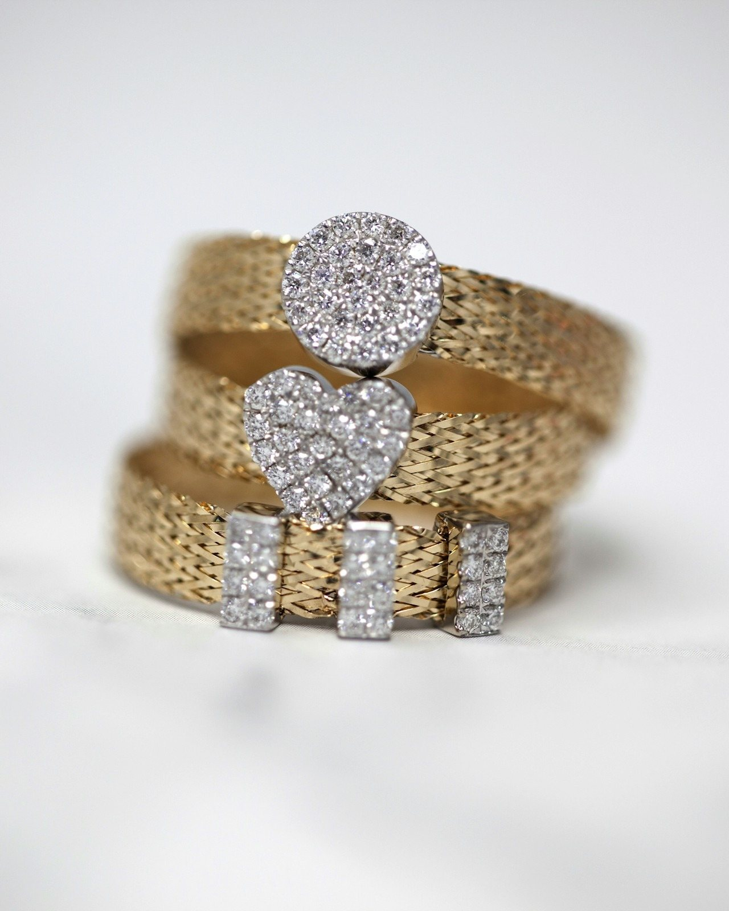

Cómo pagas
- Pago móvil
- Transferencia bancaria
- Zelle
- Efectivo
- Binance
Te pasamos los datos al confirmar la pieza.

Piezas que se heredan,
no que pasan de moda.
Oro 10k · 14k · 18k · Plata Ley 950
La piedra dice lo que estudiaste. Escoge un color y mira los modelos.
Cada color agrupa varias carreras: toca uno y te decimos cuáles. ¿No ves la tuya? Escríbenos y la ubicamos contigo — hacemos anillos para cualquier carrera o TSU.
La piedra no amarra el modelo. Cualquier color va en cualquier anillo.
Diez modelos. Ábrelos y escoge quilate, talla, piedra y grabado.
Ojo con el precio: todo lo que ves está en oro 10k. Al abrir una pieza puedes cambiar a 14k, 18k o plata Ley 950 — y el precio baja mucho.
En oro, las copias en plata van incluidas. Sin costo extra.
Mándanos la foto y te cotizamos. La modelamos en 3D para que la apruebes antes de fundir. Se hace una sola vez.
Taller propio · Caracas
Mandar la foto y cotizarUna joya de oro es dos cosas a la vez: la usas y la heredas. Mientras tanto, sigue siendo oro.
El dólar guardado compra menos cada año. El oro no lo emite nadie: no hay banco que imprima más.
| Año | USD / onza |
|---|
Precio internacional del oro (promedio anual) e inflación del dólar según el índice de EE. UU. El rendimiento pasado no garantiza el futuro. El oro sube y baja. No es asesoría financiera: vendemos joyas.
Escoge una categoría. Lo que no tiene foto va con su ficha completa.
Precios en oro 10k. Cámbialo a 14k, 18k o plata al personalizar.
Dos formas de averiguarla en un minuto. Si le pegas al lado, lo arreglamos.
Lo agrandamos sin costo. Pídelo justo antes que grande: agrandar es fácil.
¿Dudas? Pásate por la tienda y te medimos gratis.
Preguntar por mi talla| Talla | Diámetro | Circunferencia |
|---|
Cómo pagas, cuánto tarda, cómo te llega y dónde estamos.
Te pasamos los datos al confirmar la pieza.
14 días máximo
Un anillo de grado hecho desde cero, con tu talla y tu grabado.
¿La necesitas antes? Escríbenos y vemos qué se puede hacer.
Todo el país
A cualquier ciudad de Venezuela. Lo coordinamos por WhatsApp.
¿En Caracas? Retírala en la tienda y te la pruebas.
La agrandamos sin costo. Es parte del trabajo, no un problema.
Pídela justa antes que grande: achicar cuesta más.
Calcular mi talla →Justo al frente de la Asamblea Nacional, a dos cuadras de la Plaza Bolívar.
Centro de Caracas.
Ven a probarte tallas, ver las piezas de cerca o retirar la tuya. Sin cita.
Escribir antes de venirFundición, engaste, terminado y 3D para otras joyerías. Tú pones la marca; nosotros la pieza. Ves el proceso, el gramaje y la merma.
Fabricamos para GoldToday: Sambil Chacao y C.C. Cerro Verde. Pregúntales por nosotros.
Proveedor autorizado para Venezuela. Importada directo de Europa. Si imprimes en 3D, la traemos para ti.
Consultar por Bluecast¿Tienes una joyería y necesitas quien fabrique?
Escribir al tallerReferencia en dólares. Se acepta pago en bolívares a la tasa BCV del día.